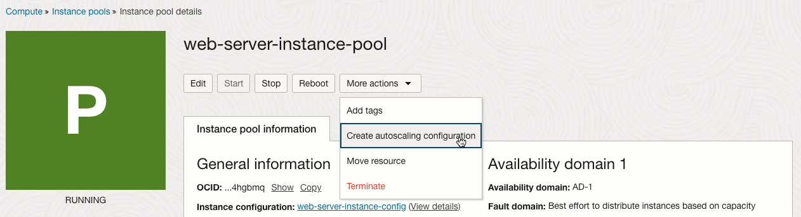
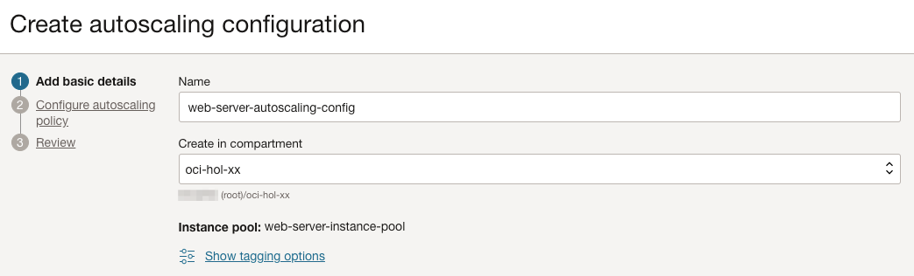
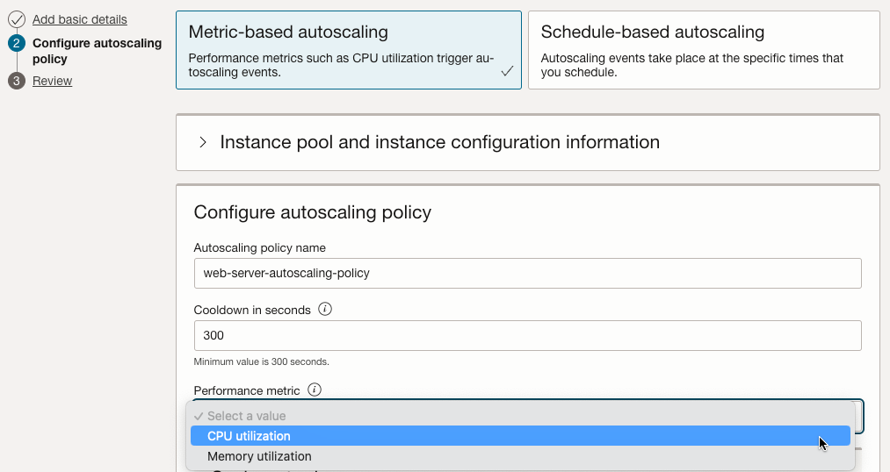
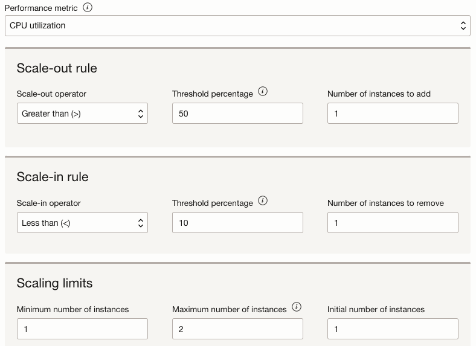
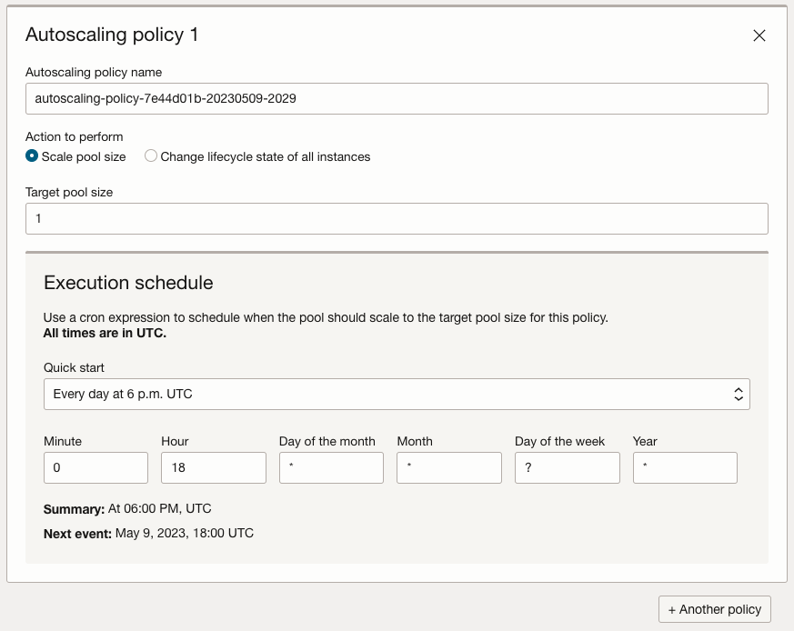
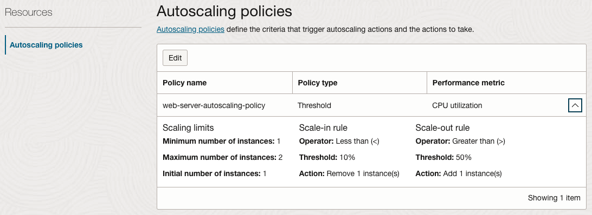

13.2 Autoscaling 구성
Autoscaling을 하기 위해서는 다음 사항이 필요합니다.
- Instance Pool: Autoscaling은 Instance Pool에서 현재 인스턴스 수를 설정된 메트릭에 따라 자동으로 변경하는 것으로 Instance Pool이 필요합니다.
- Monitoring 활성화: Compute 인스턴스는 모니터링하여 자원상태를 기반으로 하는 것으로 Monitoring이 활성화되어야 합니다.
- Service Limit: Autoscaling으로 새로운 인스턴스를 기동할 관련 자원이 충분해야 합니다.
Step #4: Instance Pool을 이용하여 어떤 기준으로 확장/축소할지 Autoscaling Configuration 생성
-
OCI 콘솔에서 내비게이션 메뉴를 엽니다. Compute > Instance Pools 항목으로 이동합니다.
-
Autoscaling 할 Instance Pool의 상세화면에서 More Actions > Create autoscaling configuration 클릭 
-
Autoscaling Configuration
-
Name: 이름 입력, 예) web-server-autoscaling-config
-
Instance Pool: 사용할 Instance Pool 선택, Instance Pool에서 Create Autoscaling Configuration로 이동했을 경우 자동으로 선택됨.

-
-
Autoscaling Policy
- Metric-based autoscaling: 메트릭 값에 따라 인스턴스의 갯수를 자동으로 조절합니다. 현재는 CPU, 메모리 사용량를 기반으로 설정 가능합니다.
- Schedule-based autoscaling: 설정한 스케줄에 따라 정의된 인스턴스 갯수로 변경하거나, 모든 인스턴스의 상태를 변경합니다.
-
메트릭 기반 오토스케일 설정기반으로 생성합니다.
-
Autoscaling policy name: 이름 입력, 예, web-server-autoscaling-policy
-
Cooldown in seconds: Cooldown 시간, 기본 300초
- Autoscaling은 Cooldown 기간동안 메트릭을 평가하여 Cooldown 시간이 지나면, 다시 Autoscaling, 즉 Instance Pool의 사이즈를 조정할 지 여부를 정합니다.
-
Performance metric: 기준 메트릭으로 현재는 CPU Utilization, Memory Utilization을 지원

-
Scale-out rule: 지정한 메트릭기반의 인스턴스를 늘리는 기준 설정
-
Scale-in rule: 지정한 메트릭기반의 인스턴스를 줄이는 기준 설정
-
Scaling limits: Scale In & Out시의 유지할 최소 인스턴스, 최대 인스턴스를 지정
-
테스트를 위해 1 인스턴스에서 CPU 부하 50% 초과 발생시 인스턴스 추가하고, CPU 부하 10% 미만시 다시 1개로 줄이는 정책으로 아래와 같이 설정합니다.

-
-
(참고) 스케줄 기반 오토스케일 설정
- Scale pool size: 설정한 스케줄에 따라 인스턴스 수를 지정할 수 있습니다.
- Change lifecycle state of all instances: 설정한 스케줄에 따라 인스턴스의 상태를 변경할 수 있습니다. 주말에 인스턴스 종료, 월요일 아침 시작 형태가 가능합니다.
- Another policy: 메트릭 기반과 달리 관리자가 지정한 스케줄에 따라 적용하는 것이기 때문에, 스케줄에 따른 여러 개의 규칙을 설정할 수 있습니다.

-
테스트 오토 스케일 생성완료

-
화면에서 보듯이 Edit를 클릭하여 생성 이후에도 규칙을 변경할 수 있습니다. 메트릭 기반 스케줄을 스케줄 기반 스케줄로 변경하는 것은 불가합니다.
이 글은 개인으로서, 개인의 시간을 할애하여 작성된 글입니다. 글의 내용에 오류가 있을 수 있으며, 글 속의 의견은 개인적인 의견입니다.